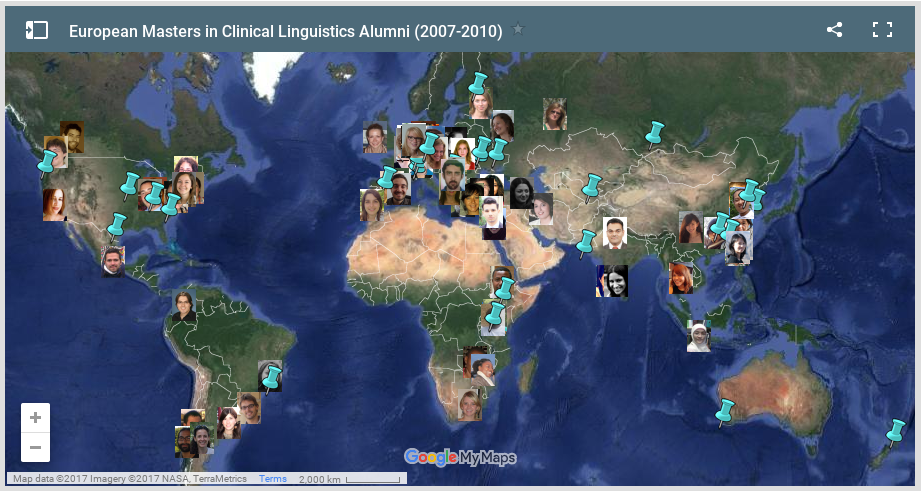
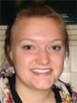
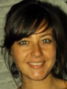

EMCL alumni page
This page is maintained by Kristina Kasparian, Lars Meyer and Toivo Glatz.Send us a mail if you want to join the alumni list!
EMCL alumni by country

EMCL alumni and thesis title by year
2005-2006

Harwintha Yuhria Anjarningsih
Developmental dyslexia in Bahasa Indonesia: Developing a screening test

Hakim Arif
Surprising Bilingualism and the construction of materials for Arabic and Bengali single word reading process: A scientific approach

Ricardo A.H. Bion
The role of prosody on the perception of word-order differences by 14-month-old German infants

Weiwei Chen
English Vowel Perception by Standard Mandarin Speakers and Southwestern Mandarin Speakers
Tatiana A. De Moroes
The application of D in assessment of narrative production of normally developing children in the period of literacy acquisition

Katharina Görlich
The influence of context on the processing of gapping sentences: An EEG study
no picture available
Anand Gungadin
Bilingual Aphaisa Test Battery: Mauritian Creole and French
no picture available
Wei Hu
Word recognition without facilitation of semantics

Kenneth O. Ouma
Multilingual Aphasia: English, Swahili and Dholuo
no picture available
Laura Perona Jara
The acquisition of Gender Agreement in Spanish
Prasannanshu
The Acquisition of Negation in Greek Language
no picture available
Malmati Tsavdaridou
A study on the perception of synthetic jitter voices

Ching-Wen Tseng
A study on the perception of synthetic jitter voices

Stella Styliani Tsigka
Clitic placement in Cypriot-Greek agrammatic speakers
Roma Wieczorek
Case-marking in Polish noun phrases—a series of case-studies of Polish Broca's and Wernicke's aphasia
2006-2007
Nicole Acrey-Franco
The influence of suprasegmentals in nonnative speech perception
Anna Bartunova
Patterns of aspect and tense production in Russian agrammatic Broca's aphasia patients

Kyna Betancourt
The perception of phonological features in synthesized consonants by AAE speakers
Gisi Cannizzaro
Verb-object order in two-word utterances: An analysis of German and English CHILDES data
Thomas Chacko
Sensory agreeability as a semantic factor facilitating the acquisition of object names by autistic children with English as second language

Bettina Demmer
Syntactic processing in German fluent aphasia: Production of sentences with derived order

Olga Dragoy
Factors of verb production in Russian agrammatic speakers
no picture available
Wei-Ming Ho
The trade-off relationship in agrammatism: Evidence from Mandarin Chinese
Ling Jia
The effect of pivotal response training on verbal performance of a Chinese child with autism

McLoddy Kadyamusuma
Sentence production with verbs of alternating transitivity in Chishona agrammatic speakers
Sarah Knee
When the vocal chords vibrate but no one listens: German perception of English word-final voicing

Yichen Lee
Basic intonation patterns of Mandarin Chinese: Evidence from Taiwanese speakers
Ramesh Mishra
Spatial premise integration in Hindi
Artem Platonov
Testing the incremental model of aspect assignment in Russian Broca's aphasia

Klaudia Szpojanowskaja
Tell me a Story: Verb in descriptive and narrative genre production of Swedish aphasic speakers

Hua-Chen Wang
Processing of locative constructions in Mandarin by children and adults
Rachel Whalen
Differentiating between two types of similarity-based interference in German sentence processing: Evidence from eye-tracking
Huadong Xiang
The ERP components and their distributions elicited by the violation of sentence context and grammaticality and their interaction with word frequency
2007-2008

Tom Abuom
Time reference in bilingual agrammatic speakers of Swahili and English
Elif Bamyaci
Time reference in Turkish agrammatism
Wei-Chun Che
Noun-verb dissociation in Chinese aphasic speakers

David Ellison
The Role of F0 Discreteness in the Discrimination of Spoken Versus Sung Words
Yifei He
Semantics, syntax, and distance: An ERP study on Chinese classifiers

Chien-Ju Hsu
Semantics, syntax, and distance: An ERP study on Chinese classifiers
Kristina Kasparian
The effect of orthographic depth on reading processes in highly proficient Italian and English bilinguals

Olha Koshchiyenko
Prosodic Sensitivity in Ukrainian Autistic Children
Lars Meyer
Distance phenomena in German sentence processing

Michaela Nerantzini
Direct object clitic production in Greek agrammatism: A single case study
Leah Overholt
African American Vernacular English (AAVE) speakers with fluent and non-fluent aphasia: Auxiliary and copula use in discourse contexts
Kujtime Presheva
Cultural Differences of Boston Naming Test in Albanian Version
Andres Felipe Reyes Gomez
A direct comparison of emotional and question linguistic prosody under unattended and attended conditions during word processing in Spanish: Gender differences
Daria Schmidt
Artificial grammar learning by Broca's agrammatic aphasics: Exploration of two different types of grammar
no picture available
Ji-Young Shim
Scrambling and topicalization in agrammatic sentence comprehension and production: A Korean Study

Ryan C. Taylor
The interaction of coherence relations and prosody in anaphoric reference: A psycholinguistic account Area: Psycholinguistics of discourse
Olga Zagika
Bilingual language assessment: A case study of Surzhyk
2008-2009
Laura Bos
Time Reference in non-brain-damaged and agrammatic speakers of Dutch, studied with ERPs and grammaticality judgment

Stephanie Caet
Pronouns in three French-speaking children with SLI
Tse Hsiang Chang
Comparison between Continuous Speech Sample Analysis and an Articulation Test in Putonghua-speaking Children
Stephan Dubovoy
Perceptual cue usage for German vowels by native Russian learners of German

Leigh Fernandez
Vocal Convergence in Chimpanzee Food Grunts
Svenja Frommann
The production of neologisms in patients with aphasia: can optimality theory account for it?

Claudio Fuenzalida
Same but different: phonological development of Spanish-Valencian bilingual children

Nadia Genserovskaya (Neugeborn)
Assessment of the degree of Russian accent in English
Ernesto Guerra
Effect of Spatial Priming on Affective Concepts Access: a Lexical Decision Task and Reaction Times Study
David Guise
Phonological perception in infants at-risk for dyslexia
no picture available
Eleanor Harding
Comparing action sequencing to musical syntax: an ERP and behavioral study

Line Huck
Perseverations in aphasia, their underlying nature and finer characteristics: a case-series approach

Al Di Jhang
The Influence of Association Strength Between Nouns Varied in Instrumentality in Verb Generation
Njinga Kankinza
Adaptation of the bilingual Aphasia test English-Bemba

Niloofar Keshtiari
The Effect of Re-Activation on Dependency Resolution in Farsi
no picture available
Tetyana Kulish
Novel Object Naming in Ukrainian

Julia Lachowicz (Nowinska)
Different or delayed? An observational study of Polish developmental dyslexia

Jingying Lu
Tone Pattern Perception of Infants at Familial Risk for Dyslexia and Controls Differ at 17 Months as Demonstrated by Event-related Potentials (ERPs)
Judith Maas
Word learning through shared reading: Comparing children with Down's syndrome and language age matched controls
no picture available
Enird Malile
Early Lexical Development in Albanian Children
Smita C. Mathias
Borrowed word production in Kannada-English Bilingual Aphasia

Helena Oosthuizen
Prepositions and verb particles in Afrikaans: Dialectal variation and developmental patterns

Li Qiang
Chinese Relative Clauses Processing with and without Context: Further Evidence for Subject Preference
Anastasiya Romanova
Referential Choice: Distribution of Subject Types in Russian Aphasic Speech

Katharina Sauter
The relation of morphological awareness and conceptual knowledge in German children with and without language impairment 
Allison Smith
Production of pronouns and null subjects in English and Spanish speaking individuals
no picture available
Christianna Stavroudis
Generalization in Vocabulary Acquisition in Non-Verbal Autistic Children: A Meta-Analysis of Computer-Based and Non-Computer Based Therapies
Claudia Teickner
Developmental differences in 17- and 29-month-old children at risk for dyslexia and age-matched controls measured by mismatch negativity
Mulugeta Tsegaye
The Effect of Literacy on Oral Language Processing: Implication for Aphasia Tests
2009-2010
Seckin Arslan
Past Time Reference in Turkish Agrammatic Aphasia, Towards a Neurolinguistic perspective on Turkish Evidentials

Chun-Lung Chen
Reexamining the Classifier Problem in Chinese Aphasic Speakers: The Role of the Shape Classifier
Michael De Beer
A comprehensive model of speech production for research on motor speech disorders
Jacqueline De Nooijer
The role of sentence context in visual word recognition: An ERP study
no picture available
Elise Drijbooms
Production of Free and Bound Morphemes in Agrammatic Dutch-French Speakers

Sithembinkosi Dube
The Role of Prosodic Cues in the Processing of Grammatical Morphemes in English: An Online Grammaticality Judgment Study
Alokika Fernandes
Appraisal of Evaluative Language in People With Aphasia's Cinderella Narratives
Carolina Gattei
The Role of Semantic Arguments Order and the Syntax-Semantics Interface in Spanish Sentence Comprehension
Cornelia Heyde
The Structure and Functioning of Interjections in English Conversation of People with Aphasia: Two Case Studies

Brigitta Keij
The Development and Assessment of the Vocabulary of Young Bilingual Children

Judith Kistner
Time reference to the future in German agrammatic speakers. Research with the TART
Lieke Leonie Koelen
The Use of Acoustic Measurements in Pinpointing Speech Production Impairments in Apraxia
no picture available
Shih-Yuan Liang
Use of Lexical Tone in Early Lexical Acquisition: An Investigation on Interrelation with Segmental System
no picture available
Elena Maksimova
Variation in two different discourse genres of Russian non-brain-damaged speakers
Tina Marusch
Production of Regular, Irregular and Subregular Inflectional Morphology in German Speakers with Agrammatic Aphasia
Julia Escalda Mendonca
Comprehension and Production of Relative Clauses in Typically Developing and SLI Brasilian Portuguese-Speaking Children
Sara Sanchez Alonso
Production of verbs with alternating transitivity in Spanish speakers with agrammatism: the role of clitic production
Hillary Kipruto Sang
Verb Production in Bilingual Agrammatic Aphasia: An Analysis of English-Swahili Spontaneous Speech
no picture available
Sean Veld
Impediments to Social Acceptance: Prosody in Asperger's Syndrome

Cintia Widmann
Acoustic and lexical predictors of speech intelligibility of dysarthric speech
no picture available
Sandra Widmer
Receptive Abilities of Dialectal Variation in Swiss German Normal Speakers
no picture available
Vanessa Wolz
Assessment and Treatment of Aphasic Bilingual Patients with Reading and Writing Impairments: A Review
no picture available
Xin Zhou
Patterns of Passive Sentence Comprehension in Broca's Aphasia in Chinese: A Test of the TDH
2010-2012
Kelly Callahan
Language, Literacy, Longevity: The Influences of Age and Literacy Skills on Verbal Fluency

Ya-Suei Cheng
Practice Makes Perfect: the relationship between language system structures, age of second language acquisition and executive function in bilinguals.
no picture available
Iroda Azimova
Production of prototypical and non-prototypical combinations of tense and aspect in Uzbek agrammatic aphasia

Vania De Aguiar
An ERP study on co-reference: processing of reflexives, pronouns and referential violations
Jakolien Den Hollander
Cataphoric and anaphoric processing of too many coreferents: an event-related potential study 
Hatice Gumus
Genetic aspects of Specific Language Impairment: Finding Neuronal targets of FOXP2 gene by downstream target screening
no picture available
Mesay Habte
Telegraphic speech and time reference in Amharic: a single case study
Vesa Kalle Korhonen
Speech and non-speech sound listening preference in typically developed adults with autistic traits: An exploratory serial recall paradigm
Chien-Wen Lee
Does prosody matter? The role of fundamental frequency contour for the intelligibility of hearing-impaired Mandarin-speaking children’s speech

Katherine McCurdy
The sound of silence: Implicit prosody and discourse context in written sentence comprehension
no picture available
Daniel Pereira Alves
Prapanit Prapanont
Reading acquisition in Thai typical development children in comparison with children with developmental dyslexia

Rui Qin
Phonological awareness and naming speed deficits in Chinese children with developmental dyslexia

Adria Rofes Sanchez
The verb in sentence context test: Standardization and application in awake neurosurgery

Gentjana Taraj
Comprehension of reflexives and personal pronouns in Albanian-speaking children: Evidence from typical development and autism spectrum disorder
no picture available
Ekaterina Virfel

Katharina Volkmann
The functional role of dorsal and ventral pathways in syntax comprehension - Two case studies of patients with peritumoral cerebral edemas
Jinxing Yue
Predictive processes during Sentence Comprehension: An ERP study in Chinese sentence reading
2011-2013
no picture available
Caroline Cheruiyot
The production of word order and bound grammatical morphemes in Swahili agrammatic speakers: An Analysis of Swahili Spontaneous speech

Chih-Chun Chuang
A single case of Aphasia in Reading Japanese
Rene Herrera Dominguez
Narrative discourse production in temporal lobe epilepsy patients
Toivo Glatz
Automated Speech Recognition in Clinical Assessment of Speech Motor Disorders
no picture available
Liudmila Glavinskaya
Processing of affective vs. non-affective aspects of word meaning
no picture available
Sana Haidry
Developing a teacher-rating screening tool in English, Urdu and Sindhi languages for dyslexic children of ages 5-11 years based in Karachi, Pakistan
no picture available
Sophie Horn
The lexical processing of prefix and particle verbs in German - a visual priming experiment
no picture available
Suzanne Hut
N400 during code-switches in second-language learners
Byurakn Ishkhanyan
Improvement of the Eastern Armenian Bilingual Aphasia Test: Syntactic comprehension deficits in Armenian-Russian bilingual aphasia
no picture available
Nora Kovacs
The processing of relative clauses in Hungarian
no picture available
Vanessa Löffler
Comprehension of German wh-questions across different age groups and the comparison to aphasia: Evidence from eye-tracking
no picture available
Miren Arantzeta Perez
Cue cost in Sentence Comprehension in Basque individuals with aphasia
Srðan Popov
Unaccusativity and Anticausativity in Aphasia in Serbian
Kristyna Tomsu
Effects of emotions on semantic categorization
Sophia Wallingford
The use of spatial and temporal language in typically developing and language impaired children
2012-2014

Sema Acar
Genetics of White-matter Alterations in Developmental Dyslexia

Nattanun Chanchaochai
The Development of Thai Verb and Sentence Test (VAST 2.0): Sentence Production and Comprehension of Thai Speakers with Agrammatic Aphasia
Yael Farhy
Hebrew reading acquisition in early and late bilingual children

Anastasia Glushko
Phrasing in Language and Music: Same or Different? A behavioural and an ERP study
no picture available
Laura Hedlund
Processing of Morphology in Finnish Speakers and Late L2 Learners Using a Multi-feature MMN Paradigm
Bernard Jap
Verb and Sentence Comprehension in Standard Indonesian Speaking Individuals with Aphasia

Nenad Jovanovic
The effects of structural priming on the comprehension of passives in Serbian-speaking children
no picture available
Aleksandra Khakalo
A Vaster Vast: Comprehension and production of verbs and sentences in Russian
no picture available
Hannah Kiesow
Keep calm and carry on: A study of phrasal verbs in the context of language attrition.
no picture available
Olena Kleshchova
Auditory Verbal Hallucinations in Schizophrenia: Literature Review and Prelininary Findings of a Neurofeedback Study
Sandra Martin
Transcranial Direct Current Stimulation (tDCS) and Discourse Treatment in Chronic Aphasia
no picture available
Aislyn Rose
Does Speech Variability in Second Language Lerning Enhance Brain Plasticity: An ERP Study
Benedictus Vassileiou
Fractional anisotropy of the arcuate/superior longitudinal fasciculus predicts verbal working memory span

Janine Willems
Resting-state functional connectivity in children at risk and without risk of dyslexia at pre-reading age
Wei Zhan
The effect of thematic patterns in context on English relative clause processing
2013-2015
no picture available
Serine Avetisyan
The Impact of Focus Operators on the Processing of Long-Distance Dependencies: Evidence from Eastern Armenian
Gabriele Bianco
Dynamic Assessment of vocabulary, sentence structure and phonology in combination with other measures as a screening tool for the identification of Specific Language Impairment in early Italian second language learners
no picture available
Kirsten Birgit Ensink
Retrieval interference in written and spoken sentence comprehension

Rowena Garcia
Thematic Role Assignment in the L1 Acquisition of Tagalog

Cheng-Hung Valentine Hsin
Priming of Word Level Tone in Native Mandarin Chinese Speakers by Musical Pitch: An ERP study
Chaya Manawamma
Manipulating the Cue-Stimulus Interval (CSI) in a Language Switching Task with Dutch-English Bilinguals: A Behavioural Study

Varsha Laxman Pingale
Use of short Token test for the screening of aphasia among Marathi speaking population of India
no picture available
Tihana Smiljanic
Acquisition of gender agreement in Serbian language
Frank Tsiwah
Production and comprehension of time reference in Akan Agrammatic speakers

Martin Vasilev
The effect of temporal delay on the integration of parafoveal and foveal information during reading.
Michelle Jennifer White
The Comprehension of Negation in the L1 Acquisition of Afrikaans

Nienke Wolthuis
The relation between slow-wave brain activity and language functioning in glioma patients: a retrospective study
2014-2016
Natania Ang
Uncovering Language Switching Control in Visual- and Auditory-Word Comprehension in Bilingual Aphasia
no picture available
Maria Sandra Gisbert Muñoz
Testing the expectation-perception model of auditory hallucinations with dynamic causal modeling for fMRI
Nathaniel Lartey
Comprehension of Object wh-questions in Akan agrammatic speakers: The movement dilemma
no picture available
Maria Loktionova
Inferential Language in Russian Children with High-Functioning Autism: The Acquisition of Mental Verbs.
no picture available
Ping-Hui Lu
An examination on serial order STM in Mandarin Chinese children with developmental dyslexia.

Robert Mettrock
Multi-time resolution analysis of speech revisited: Intelligibility of speech with a manipulated modulation spectrum

Leanne_Nagels
The processing of contextual and lexical information in cochlear implant users

Ann-Katrin Ohlerth
Language Mapping using Object and Action Naming under nTMS
Aida Salcic
Electrophysiological correlates of gender agreement processing in Dutch: the effect of linear distance
no picture available
Leonor von der Bij
Neurogenic versus Psychogenic Foreign Accent Syndrome: An acoustic analysis

Obada Zaidany
Intergestural Coordination in Lombard Speech
2015-2017
Daniela Palleschi
What's in a Name? Extralinguistic knowledge as time reference: an ERP study
no picture available
Wilasinee Siriboonpipattana
Passive Sentence Comprehension in Thai Agrammatic Speakers
Eugene Tsakos
Facilitating Reading in Greek-speaking Children with Dyslexia: Game-based Learning to the Rescue!
2016-2018
Atilla Atasoy
Simulating Grammatical Encoding with Multi-Label Decision Tree Classifiers - An Investigation into the Loci of Impairment in Turkish-Speaking Individuals with Agrammatism

Kristien De Ruiter
Impaired Pragmatic Language Abilities in Children with Duchenne Muscular Dystrophy
Eugenia Rykova
Perceptual and acoustic similarities between the voices of family members: an approach to synthesize a voice based on family-shared f0 characteristics
Konstantina Olioumtsevits
The syntax-semantics interface during sentence processing: ERP evidence on relative clause attachment ambiguity in Greek
2017-2019

Kathleen Kay Amora
Narrative structure and complexity of typically developing Tagalog-English bilingual children and adults
Simone Lira Calabrich
Semantic and Syntactic Gender (Dis) Agreement Processing in Brazilian Portuguese: An ERP Study.
Jin Luo
The role of memory in semantic processing: evidence from N400 using simultaneous TMS-EEG
Paul Okyere Omane
The development of wh-question formation in Akan-speaking children